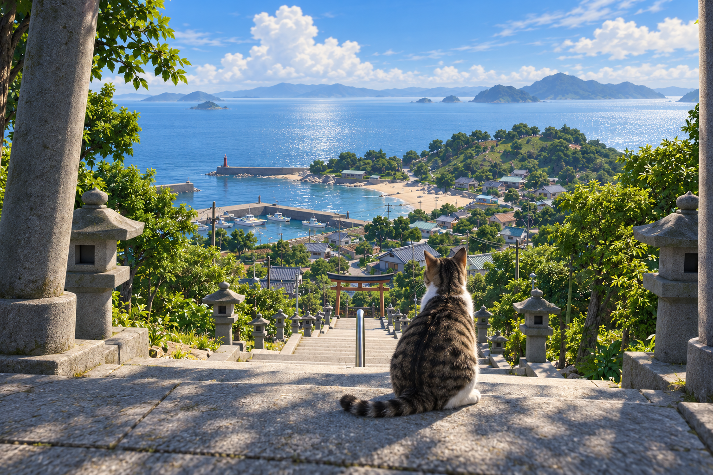

01朝 / MORNING
お魚、ちょっとくださいな。
港に戻った漁師さんを、じっと見つめて。
おこぼれを狙いたいけど、水はちょっと苦手。
瀬戸内の、小さな島から。
この島は、ぜんぶ猫の庭。
セミの声。潮のにおい。あたたかい石畳。
猫になって、あの夏へ寄り道しよう。
ただいま開発中 / 公開時期未定

A CAT'S SUMMER
瀬戸内海に浮かぶ、ちいさな島。
ここで暮らす一匹の猫が、あなたです。
塀の上を歩いて、気になる音を追いかけて。
島の人に甘えたら、ひと休み。
見慣れた景色も、猫の目線では大きな遊び場。
そんな気ままな夏を、ブラウザで。
A DAY, YOUR WAY
追いかけるのも、甘えるのも、猫の仕事。
朝・昼・夕に出会う、小さなお楽しみ。以下は制作を予定している遊びです。
港に戻った漁師さんを、じっと見つめて。
おこぼれを狙いたいけど、水はちょっと苦手。
神社の大きな木から、セミの声。
そっと近づいて、お尻を振って、飛びかかる。
気になる路地を抜けて、いつものおうちへ。
きょうのおやつは、上手にねだれるかな。
A SMALL ISLAND, A BIG PLAYGROUND
港、路地、神社、その向こうの浜辺。
小さな島には、猫だけの通り道がある。
森から港まで、島ぜんぶが遊び場。今日は、どこから歩こう。
開発中のゲーム画面GAME INFORMATION
この島で過ごす一日を、ただいま制作中。
遊べる日まで、もう少しお待ちください。
BEFORE YOUR VISIT
現在は開発中です。このページではゲームのコンセプトと開発中の画面を紹介しています。公開時期は未定です。
PCとスマートフォンのブラウザに対応する予定です。スマートフォンでは横持ちで、画面上のスティックとボタンで操作する予定です。対応端末の詳細は公開時に案内します。
島で暮らす猫になり、虫を追ったり、おやつをねだったり、塀の上を歩いたりする3Dゲームです。朝・昼・夕の一区切りを3〜5分で遊べる体験を目指しています。
トップ画像はゲームの世界観を表現したイメージビジュアル（AI生成）です。それ以外の画像は開発中のゲーム画面です。見た目や遊びの内容、対応環境などは今後変更する可能性があります。
凪いだ海の向こうで、